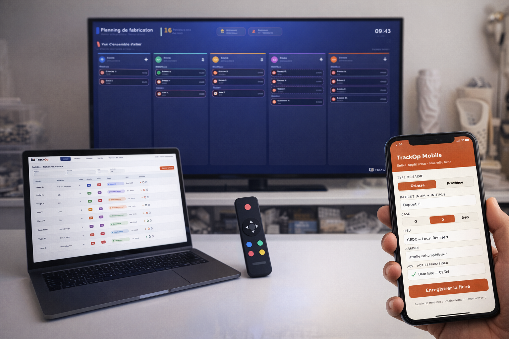

Track-Op s'installe dans votre atelier, et vos données patients restent chez vous. Le logiciel de planification temps réel pour ateliers d'orthopédie, d'orthoprothèse et de podo-orthèse.

Track-Op s'installe dans votre atelier,
et vos données patients restent chez vous.
Track-Op ajoute une couche de visibilité par-dessus vos habitudes : la vue d'ensemble du flux et la gestion des fabrications. On voit où en est chaque appareil, qui fait quoi, ce qui est urgent — sans rien bouleverser dans l'atelier.
Track-Op ne remplace pas votre fiche d'appareillage et ne touche pas au travail de l'établi. Il ajoute la visibilité qui manquait — sans rien bouleverser.
Elles vivent sur votre matériel, chez vous. Vous en êtes le seul maître. Pas de cloud tiers, pas de transmission silencieuse, pas de dépendance.
Pas de certification HDS requise — vous hébergez vos propres données (art. L.1111-8 CSP).
Mesure, rectification, prêt thermo, thermoformage, mise à l'essayage, essayage, fabrication définitive, livraison. Chaque appareil suivi sur tout son cycle.
Le responsable des fabrications dispatche d'un coup d'œil, sans surcharger personne. La capacité de rectification est calculée à partir du volume d'heures que chaque applicateur concède à l'atelier.
Liste d'appareils, étapes, temps par défaut, intervenants. Le responsable règle tout, sans informaticien.
Installation chez vous (ou assistée à distance), configuration à l'image de votre atelier, reprise de vos données existantes si besoin, formation de l'équipe, mises à jour et support. Nous restons éditeur, jamais propriétaires de vos données.
La responsabilité change de mains au fil du parcours. L'outil respecte cette chaîne — pas l'inverse.
Crée la fiche dès la consultation — prise de mesure, type d'appareil, rendez-vous — et valide la rectification. Il reste responsable de sa fiche jusqu'à l'essayage, puis la livraison. Pour une retouche, c'est lui qui donne le top atelier.
Mobile · création de ficheLe maître du dispatch. Il répartit le travail, assigne les techniciens, fixe les priorités. Track-Op lui montre d'un coup d'œil les fiches à faire, les urgences et celles encore sans technicien.
Poste · dispatch & prioritésAu cœur du système. Ils fabriquent l'appareil (thermoformage, rectification, finitions). Tout le suivi de Track-Op tourne autour de la fabrication — c'est là que se joue le respect des délais.
Mural · vue de productionPetite équipe ? Quand les applicateurs rectifient ET fabriquent eux-mêmes (cas courant comme chez OE3D), Track-Op le gère naturellement — l'applicateur est alors aussi assigné comme fabricant sur sa propre fiche.
Track-Op tourne sur votre matériel, dans votre atelier. Sauvegarde locale automatique. Copie de sécurité chiffrée — l'hébergeur de la copie ne voit que du chiffré. Et si vous arrêtez un jour, vous repartez avec l'intégralité de vos données, dans un format ouvert.
Aucune dépendance. Aucun piège. Aucun changement dans vos habitudes : la fiche d'appareil reste votre référence.
Pas besoin d'être informaticien. Voici le matériel à avoir sous la main — le détail chiffré est dans l'annexe technique, pour la personne qui installera.
Un ordinateur récent « qui reste allumé » pendant les heures d'ouverture. C'est le cœur de Track-Op.
Une télévision Full HD 16/9 + un mini-PC ou clé HDMI + télécommande sans fil.
Rien à installer — un simple navigateur internet suffit sur vos ordinateurs habituels.
Un réseau local fiable (Ethernet conseillé). Les postes et l'écran se parlent entre eux.
Une petite batterie de secours qui évite qu'une coupure de courant n'abîme vos données.
Installation, configuration, formation, mises à jour. On s'occupe de tout — vous gardez la main.
C-Ter reste éditeur et installateur, jamais propriétaire de vos données. Notre métier : que ça tourne, chez vous, simplement.
Chez vous ou assistée à distance. Configuration à l'image de votre atelier.
Si vous avez déjà un système, on récupère ce qui peut l'être. Pas de rupture.
Applicateurs, responsable des fabrications, techniciens. Chacun sa vue, chacun sa main.
Sans jamais toucher à vos données. L'outil s'améliore, vos fiches ne bougent pas.
Une équipe joignable, une intervention sans accès à vos données réelles dès que possible.
L'application VOP numérisera la fiche d'appareil (mesures, suivi) sur tablette/mobile.
30 minutes en visio avec un atelier en production. Données réelles, pas de slides. Vous repartez avec une idée précise de ce que ça donne chez vous.